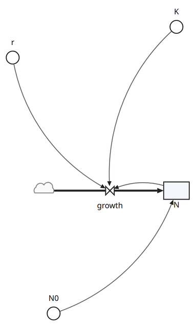

Ricker (descriptive population model)
One population N, its next value given by an equation describing density dependence: like the logistic but never negative; with high r it cycles and becomes chaotic. One of thirteen such equations in the program, each here a model of its own, listed under "Family". Default values are chosen for illustration (the program asks for them).
It opens with its plots and its sliders: move a slider and the model runs again.
Open in SimileFrom Norman Owen-Smith's book Introduction to Modeling in Wildlife and Resource Conservation (Blackwell, 2007), converted from its TrueBASIC program DESCRPOP.tru and published here with his permission. The model spec: descrpop-ricker.json.

Descriptive population models: thirteen forms of density dependence
Each is a model of its own. In Simile, the Metadata panel (Widgets › Metadata) lists them too, and opens any of them beside this one.
- Exponential growth with a ceiling: grows by a fixed proportion each year until it reaches K, then stays there
- Logistic: growth slows in a straight line as N approaches K; with large r it overshoots, cycles or becomes chaotic
- Ricker (this model): like the logistic but never negative; with high r it cycles and becomes chaotic
- Beverton-Holt: growth saturates smoothly towards an equilibrium, never overshooting; crowding set by a
- Generalised Beverton-Holt: an exponent b sets how sharply crowding takes effect
- Theta-logistic: an exponent p sets where density dependence bites: late (p > 1) or early (p < 1)
- Threshold logistic: exponential growth below a threshold density A, logistic between A and K
- Lagged logistic: crowding judged by the population some years ago, so it overshoots and cycles
- Logistic with cyclic K: the carrying capacity swings by half around K over a set period
- Logistic with random K: K drawn afresh each year between half and one and a half times its mean
- Theta-logistic with random K: the theta-logistic, with K random each year
- Generalised Beverton-Holt with random K: the generalised Beverton-Holt, with K random each year
- Allee effect: at low density growth falls rather than rises, so a small population can decline to extinction